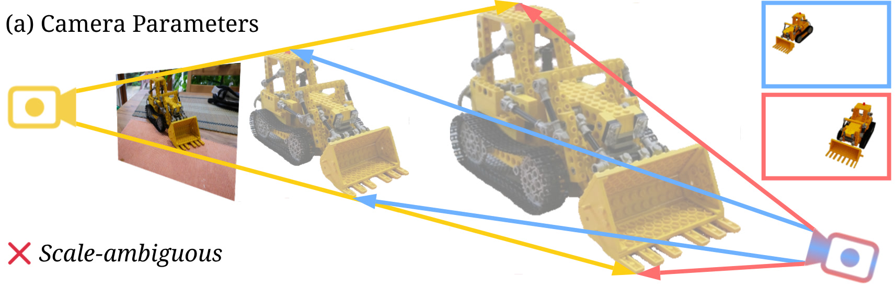
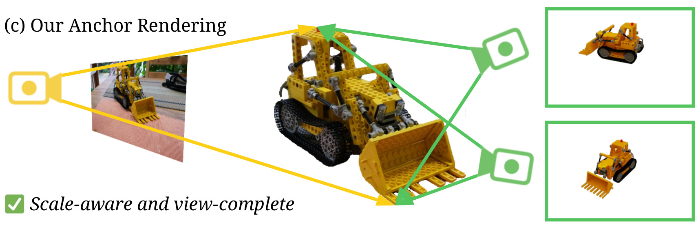
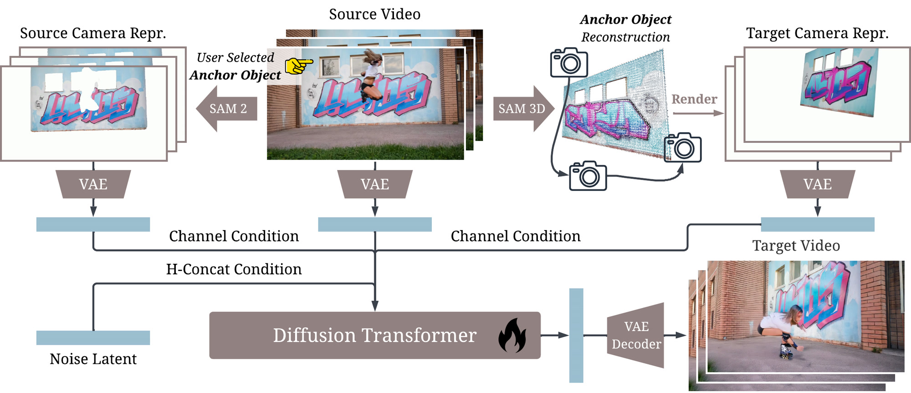

Method
How to Represent the Camera?

Camera parameters are scale-ambiguous. A small object near the input camera and a large object farther away give the same input image, but the same target camera sees them at a different size, position and angle, so the target view is not determined.

Explicit geometry is incomplete and distorted. A point cloud or depth warp of the input image only covers the surface seen from the input camera. Under a large viewpoint change, the object breaks apart and the rendering misleads the video generation.

Our anchor rendering is scale-aware and view-complete. It uses the complete reconstructed object, so target cameras at any angle see the whole anchor with the correct size and pose.
Overview

The user selects an anchor object in the source video. SAM 2 tracks it to give the source camera representation (the anchor cut-out), and SAM 3D reconstructs it; the reconstruction is aligned to the source cameras and rendered along the target trajectory to give the target camera representation. The noisy target latent and the source latent are concatenated along the height (H-Concat), each half receives its camera representation through channel concatenation, and the diffusion transformer denoises the target half, which the VAE decodes into the target video. Because H-Concat aligns source and target frames in time, the model is distilled into AnyCam-AR, a streaming few-step generator.